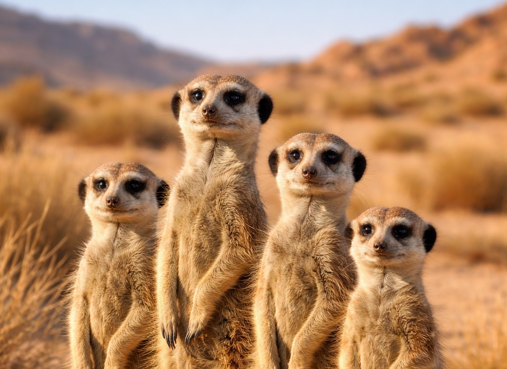

Сурикаты обитают в южной части Африки и предпочитают сухие территории.
Это небольшие животные с вытянутым телом и длинным хвостом. Часто стоят "столбиком".

Сурикаты живут семьями и помогают друг другу: всесте ищут еду и охраняют норы
пока часть группы занята делами один сурикат может наблюдать за опасностью с возвышенности.
В рационе бывают насекомые, личинки и другие мелкие животные. Иногда - растения